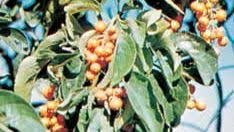

Lepidobotryaceae
(No widely accepted common name)
Lepidobotryaceae is a very small family of dicotyledonous flowering plants in the order Celastrales, consisting of only two genera, each with one or possibly two species. These are trees or shrubs found disjunctly in tropical Africa and Central/South America. The family is notable for its unusual leaf structure in Lepidobotrys and its isolated phylogenetic position.
Overview
The Lepidobotryaceae family is remarkably small, containing just two genera: Lepidobotrys, with one species (L. staudtii) in tropical West and Central Africa, and Ruptiliocarpon, with one species (R. caracolito) found in Central and northern South America. These plants are evergreen trees or large shrubs inhabiting tropical rainforests.
The family was established relatively recently based on molecular data, as the two genera were previously placed in different families (Lepidobotrys often in Linaceae or Oxalidaceae, Ruptiliocarpon initially undescribed or misplaced). A distinctive feature of Lepidobotrys is its leaf structure: although appearing simple, the leaf blade is attached to the petiole via a distinct joint (pulvinus), indicating it is technically a unifoliolate compound leaf where terminal leaflets were lost during evolution. Ruptiliocarpon has truly simple leaves. Both genera have small, unisexual flowers (plants are dioecious) and produce capsular fruits containing seeds covered by a bright orange or red aril.
Lepidobotryaceae has no significant economic importance. Its primary interest is phylogenetic, representing a distinct lineage within the order Celastrales (Rosid clade), alongside the much larger Celastraceae family and the small Parnassiaceae family.
Quick Facts
- Scientific Name: Lepidobotryaceae J.Léonard
- Common Name: (None widely accepted)
- Number of Genera: 2 (Lepidobotrys, Ruptiliocarpon)
- Number of Species: 2-3
- Distribution: Disjunct: Tropical Africa and Tropical Central/South America
- Evolutionary Group: Eudicots - Rosids - Fabids - Celastrales
Key Characteristics
Growth Form and Habit
Evergreen trees or shrubs.
Leaves
Leaves are alternate, simple (Ruptiliocarpon) or appearing simple but technically unifoliolate compound due to a distinct joint (pulvinus) at the apex of the petiole (Lepidobotrys). Leaf margins are entire. Stipules are present, often enclosing the bud, but fall early (caducous).
Inflorescence
Flowers are borne in short, axillary fascicles (clusters) or small panicles.
Flowers
Flowers are small, inconspicuous, unisexual (plants dioecious), and actinomorphic (radially symmetrical). They are typically (4-)5-merous. Key features include:
- Calyx: (4-)5 sepals, shortly fused at the base, persistent.
- Corolla: (4-)5 petals, free, usually yellowish or greenish.
- Androecium (male flowers): Stamens typically twice the number of petals, i.e., 8 or 10, arranged in two whorls. Filaments are distinct or slightly fused at the base. A nectar disc, typically intrastaminal, is present. A rudimentary pistillode is usually present.
- Gynoecium (female flowers): Ovary is superior, composed of 2 or 3 fused carpels forming 2 or 3 locules. Each locule contains 1 or 2 apical-axile ovules. Styles are short, free or fused at the base. Staminodes (sterile stamens) are usually present.
Fruits and Seeds
The fruit is a loculicidal capsule, typically containing only 1 (rarely 2-3) seed. The capsule walls may be leathery or somewhat woody. The seed is relatively large and covered by a conspicuous, fleshy, brightly colored (orange or red) aril.
Chemical Characteristics
Specific chemical constituents are not widely documented for the family as a whole. They lack the carnivorous adaptations and specialized flower structures of Lentibulariaceae.
Field Identification
Identifying Lepidobotryaceae relies on recognizing its tree/shrub habit, specific leaf features, and fruit/seed characteristics:
Primary Identification Features
- Habit: Trees or shrubs of tropical rainforests (Africa or Neotropics).
- Leaves: Alternate, entire margins, stipulate (stipules often fallen). Either simple (Ruptiliocarpon) or appearing simple but with a distinct joint at the petiole apex (Lepidobotrys).
- Flowers: Small, unisexual (dioecious plants), (4-)5-merous, with 8-10 stamens (in male flowers).
- Ovary Position: Ovary is superior.
- Fruit: A capsule, usually 1-seeded.
- Seed: Covered by a bright orange or red fleshy aril.
Secondary Identification Features
- Inflorescence: Short axillary clusters or panicles.
- Flower Parts: (4-)5 sepals, (4-)5 petals.
- Habitat: Tropical rainforests.
Seasonal Identification Tips
- Flowering/Fruiting Season: Varies geographically within the tropics. Flowers are inconspicuous, but fruits (capsules, potentially open showing arillate seeds) might be more noticeable.
- Vegetative State: The unique unifoliolate leaf structure of Lepidobotrys is diagnostic. For Ruptiliocarpon, vegetative identification might be difficult without reproductive parts.
Common Confusion Points
Distinguishing these rare trees can be challenging:
- Celastraceae: Sister family in Celastrales. Highly diverse; many trees/shrubs with simple leaves, often opposite. Flowers often small, 4-5 merous, with prominent discs. Fruit various (capsules, drupes, samaras), seeds often arillate. Differs in lacking the unifoliolate leaf structure and details of flower/fruit morphology.
- Other families with arillate seeds (e.g., some Sapindaceae, Meliaceae, Myristicaceae): These families differ significantly in leaf type (often compound in Sapindaceae/Meliaceae), flower structure (e.g., fused stamens in Meliaceae, unisexual flowers often with different perianth in Myristicaceae), and phylogenetic placement.
- Families with unifoliolate leaves (e.g., some Fabaceae, Rutaceae): While rare, unifoliolate leaves occur elsewhere but are combined with different features (e.g., legume fruit in Fabaceae, aromatic glands and different flower structure in Rutaceae).
Field Guide Quick Reference
Look For:
- Tropical trees/shrubs
- Leaves alternate, stipulate, entire
- Leaf simple OR appearing simple with joint at petiole apex
- Flowers small, unisexual, (4-)5-merous
- 8-10 stamens (male fl.)
- Superior ovary
- Fruit a capsule
- Seed with bright aril (orange/red)
Key Variations:
- Leaf type (simple vs. unifoliolate)
- Geographic location (Africa vs. Neotropics)
Notable Examples
The family contains only two known genera, each likely monospecific or nearly so.

Lepidobotrys staudtii
(No common name)
A tree found in tropical West and Central Africa. It is characterized by its technically unifoliolate compound leaves, where the single leaflet articulates with the petiole apex. Produces small flowers and capsules with arillate seeds.

Ruptiliocarpon caracolito
(No common name)
A tree discovered relatively recently, found in Central America (e.g., Costa Rica, Nicaragua) and northern South America (Colombia). It has simple leaves (lacking the joint of Lepidobotrys). The fruit capsule dehisces distinctively, ejecting the inner fruit layer containing the arillate seed.
Phylogeny and Classification
Lepidobotryaceae is placed in the order Celastrales, which belongs to the Fabid (or Eurosids I) clade within the Rosids. This order is relatively small compared to giants like Malpighiales or Fabales.
The order Celastrales contains only three families according to the APG IV system: the large and diverse Celastraceae (staff-tree or bittersweet family), the small herbaceous family Parnassiaceae (grass-of-Parnassus family, including former Lepuropetalaceae), and Lepidobotryaceae itself. Molecular studies strongly support the monophyly of Celastrales and place Lepidobotryaceae as sister to the clade containing Celastraceae and Parnassiaceae. This phylogenetic position highlights its distinct evolutionary history.
Position in Plant Phylogeny
- Kingdom: Plantae
- Clade: Angiosperms (Flowering plants)
- Clade: Eudicots
- Clade: Rosids
- Clade: Fabids (Eurosids I)
- Order: Celastrales
- Family: Lepidobotryaceae
Evolutionary Significance
Lepidobotryaceae, despite its rarity, is significant for:
- Phylogenetic Position: Its placement as sister to the Celastraceae + Parnassiaceae clade helps define the basal relationships within the order Celastrales and contributes to understanding the evolution of this Rosid lineage.
- Biogeography: The striking disjunct distribution between Africa (Lepidobotrys) and the Neotropics (Ruptiliocarpon) is a classic example of an old Gondwanan vicariance pattern or long-distance dispersal, indicating an ancient origin for the family.
- Leaf Morphology: The unifoliolate compound leaf of Lepidobotrys is a morphological curiosity, illustrating evolutionary reduction from a compound ancestral state.
- Conservation: Given the small number of species and restricted ranges, understanding this family is relevant for biodiversity conservation.